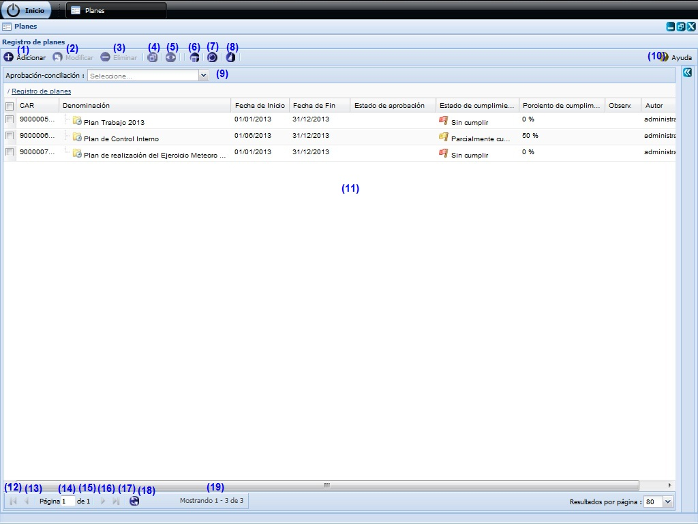
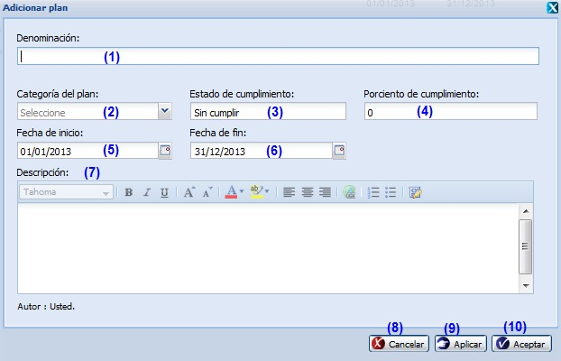
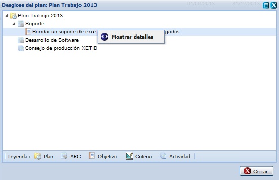
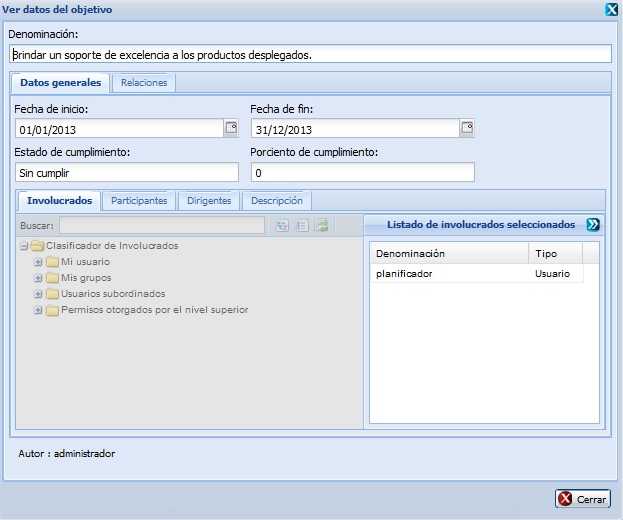
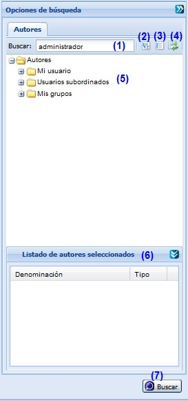
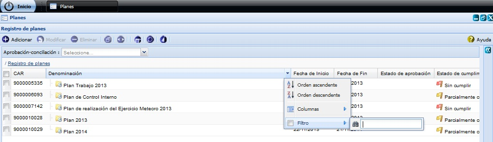
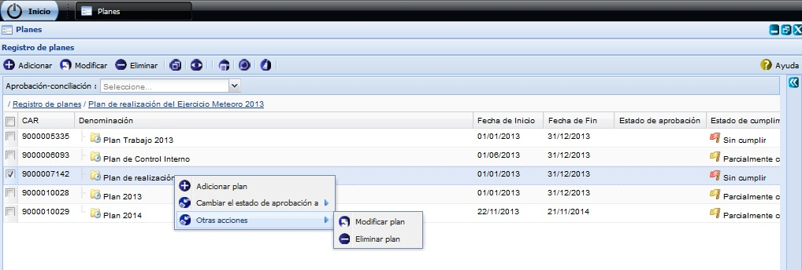

--PLANES--
Esta funcionalidad permite realizar la configuración de Planes necesarios para la gestión de planificación de actividades. Para acceder a estas funcionalidades el usuario debe estar autenticado y debe seleccionar la ruta: Inicio/Planificación/Planificación de actividades/Configuración/Planes, ver Figura 1.

Figura 1.Interfaz y acciones de la funcionalidad Planes.
Las diferentes opciones que conforman la figura anterior permiten:
- Adicionar un plan, ver Acápite Adicionar un plan, esta acción permite adicionar un plan, cuando se presione el botón Aceptar o Aplicar de la interfaz el sistema mostrará un mensaje de información notificando que se adicionó el plan.
- Modificar un plan previamente seleccionada en el listado. Se mostrará la interfaz con los datos cargados, posibilitando que se modifiquen los que se requieran. La validación de cada uno de los campos de la interfaz será muy similar al descrito en el Acápite Adicionar un plan. En caso de seleccionar la opción Modificar y no hacer cambios en la información referente al plan seleccionado se debe mostrar un mensaje. Este botón estará deshabilitado hasta tanto no se haya seleccionado un plan.
- Eliminar un plan previamente seleccionado en el listado. Esta acción permite eliminar el(los) plan(es) deseado(s), una vez seleccionado(s) el(los) mismo(s) se procede a seleccionar la opción Eliminar de la interfaz, automáticamente se mostrará un mensaje de confirmación, que se puede Aceptar o Cancelar según sea el caso, de presionar la opción Aceptar el sistema le mostrará un mensaje de información sobre el éxito de la operación realizada, quedando eliminado(s) el(los) plan(es) seleccionado(s), si cancela el mensaje de confirmación, el sistema permanece en la interfaz principal y no elimina el(los) plan(es).Inicialmente la opción Eliminar de la interfaz estará deshabilitado hasta tanto no se haya seleccionado al menos un plan.
- Desglosar plan, ver acápite Desglosar plan . Inicialmente la opción Desglosar plan de la interfaz estará deshabilitado hasta tanto no se haya seleccionado el plan del que se desea consultar su desglose.
- Gestionar observaciones del plan, ver acápite Gestionar observaciones del plan . Inicialmente la opción Gestionar observaciones del plan de la interfaz estará deshabilitado hasta tanto no se haya seleccionado el plan a gestionar una observación.
- Observar notificaciones generadas, ver Acápite Observar notificaciones generadas.
- Búsqueda avanzada, ver Acápite Búsqueda avanzada de autores, esta acción permite buscar un plan entre los planes adicionados en el sistema.
- Limpiar filtro(s). Esta acción limpiará todos los criterios de búsqueda, deshabilitando los filtros realizados.
- Aprobación-conciliación. Podrá realizar un filtrado de los planes que se encuentren en un determinado nivel de aprobación, seleccionando uno de los dos posibles valores de la lista desplegable Aprobación-conciliación: Si o No. Una vez seleccionada la opción, el sistema le muestra en la interfaz Registro de planes (25) aquellos que coincidan con el valor de aprobación y conciliación especificado.
- Mostrar la ayuda de la funcionalidad.
- Se muestra el listado de planes.
- Ir a la primera página, mostrando los primeros planes.
- Ir a la página anterior.
- Mostrar el número de la página donde se encuentra, se puede introducir el número de la página a la que se desea ir.
- Mostrar el número máximo de páginas.
- Ir a la siguiente página.
- Ir a la última página.
- Actualizar el listado de planes.
- Mostrar la cantidad de resultados encontrados.
Adicionar un plan
Se presiona el botón Adicionar de la interfaz, ver opción 1 de la figura 1. Inmediatamente aparecerá una ventana donde se podrán especificar los datos relacionados con el plan que se desea adicionar, ver Figura 2.

Figura 2. Interfaz Adicionar plan.
Las opciones de la figura anterior permiten:
- Introducir la denominación del plan que desea insertar.
- Seleccionar la categoría que presentará el plan a insertar.
- El estado de cumplimiento el sistema lo determinará a partir del valor registrado en porciento de cumplimiento.
- Introducir el porciento de cumplimiento que presentará el plan a insertar.
- Seleccionar la fecha de inicio del plan a insertar.
- Seleccionar la fecha de fin del plan a insertar.
- Introducir una breve descripción del plan a insertar. Este dato no es obligatorio.
- Cancelar las acciones y salir de la interfaz sin guardar los datos.
- Guardar los datos y limpiar los campos de la interfaz, permitiendo adicionar otro plan.
- Adicionar los datos del plan al listado y cerrar la interfaz.
Validación de los campos:
- El campo Denominación es obligatorio, en caso de dejar este campo vacío y presionar los botones Aceptar o Aplicar el sistema le notificará el error, subrayando el campo en rojo y mostrando un mensaje de error, al pasar el cursor del mouse por encima del campo subrayado, y el mensaje de error “Por favor verifique hay campo(s) vacío(s)”. Este campo acepta caracteres alfanuméricos y los caracteres especiales (“%#@!*() _;:,?-.). Al escribir otro tipo de carácter no permitido notificará subrayando el campo en rojo y mostrando el mensaje. También debe tener en cuenta que no podrá adicionar un plan ya existente, de suceder esto el sistema le notificará mostrándole un mensaje de error.
- En el campo Porciento de cumplimiento solo podrá ingresar números entre los valores de 0 a 100. En caso de que ocurra el sistema debe mostrar el siguiente mensaje: “El valor máximo es de 100.”
- El campo Fecha de inicio y Fecha de fin son obligatorios, en caso de dejar estos campos vacíos y presionar los botones Aceptar o Aplicar el sistema le notificará el error, subrayando el campo en rojo y mostrando un mensaje de error, al pasar el cursor del mouse por encima del campo subrayado, y el mensaje de error “Por favor verifique hay campo(s) vacío(s)”. Debe considerar que el sistema solo permite seleccionar una fecha de inicio que sea menor o igual que la fecha de fin.
- El campo Categoría del plan es obligatorio, en caso de dejar este campo vacío y presionar los botones Aceptar o Aplicar el sistema le notificará el error, subrayando el campo en rojo y mostrando un mensaje de error, al pasar el cursor del mouse por encima del campo subrayado, y el mensaje de error “Por favor verifique hay campo(s) vacío(s)”.
- El campo Descripción puede ser vacío y admite cualquier tipo de caracteres de longitud infinita.
Desglosar plan
Se presiona el botón Desglosar plan de la interfaz, ver opción 4 de la figura 1. Inmediatamente aparecerá una ventana donde se podrán especificar los datos relacionados con el plan a desglosar, ver Figura 3.

Figura 3. Interfaz Desglosar plan.
Nota: Si desea mostrar detalles de un plan insertado, procede a seleccionar el plan y selecciona mediante clic secundario (derecho) la opción Mostrar detalles, ver figura 3. Una vez presionada dicha opción el sistema le mostrara la interfaz Ver datos del objetivo, ver figura 4. En esta interfaz podrá conocer los datos del elemento seleccionado, estos datos no se permite modificarlos. Dicha interfaz de consulta se puede cerrar dando clic sobre el botón Cerrar que aparece en la parte inferior derecha.

Figura 4. Interfaz Detalles del desglose del plan.
Gestionar observaciones al plan
Se presiona el botón Gestionar observaciones al plan de la interfaz, ver opción 5 de la figura 1. Inmediatamente aparecerá una ventana donde se podrán especificar los datos relacionados con el plan que se le desea gestionar una observación, ver Figura 5.

Figura 5. Interfaz Registro de observaciones.
Las opciones de la figura anterior permiten:
- Adicionar observaciones, ver Acápite Adicionar observaciones, esta acción permite adicionar observaciones al plan.
- Eliminar una observación previamente seleccionada en el listado de observaciones de un plan. Esta acción permite eliminar la(s) observación(es) deseada(s), una vez seleccionada(s) la(s) misma(s) se procede a seleccionar la opción Eliminar de la interfaz, automáticamente se mostrará un mensaje de confirmación, que se puede Aceptar o Cancelar según sea el caso, de presionar la opción Aceptar el sistema le mostrará un mensaje de información sobre el éxito de la operación realizada, quedando eliminada(s) la(s) observación(es) seleccionada(s), si cancela el mensaje de confirmación, el sistema permanece en la interfaz Registro de observaciones y no elimina la(s) observación(es). Inicialmente la opción Eliminar de la interfaz estará deshabilitado hasta tanto no se haya seleccionado la(s) observación(es) a eliminar.
- Mostrar listado de observaciones del plan.
- Cuando se presione el botón Cerrar de la interfaz el sistema mostrará en el plan seleccionado el campo de Observaciones activo si adicionó alguna observación al plan seleccionado.
Adicionar observaciones
Se presiona el botón Adicionar observaciones de la interfaz, ver opción 1 de la figura 5. Inmediatamente aparecerá una ventana donde se podrán especificar las observaciones del plan, ver Figura 6.

Figura 6. Interfaz Adicionar observación.
Las opciones de la figura anterior permiten:
- Introducir el asunto de la observación que desea insertar al plan.
- Introducir la observación del plan. Este dato no es obligatorio
- Cancelar las acciones y salir de la interfaz sin guardar los datos.
- Adicionar los datos de la observación y cerrar la interfaz. El sistema mostrará un mensaje de información notificando que se adicionó la observación al plan.
Validación de los campos:
- El campo Asunto es obligatorio, en caso de dejar este campo vacío y presionar los botones Aceptar o Aplicar el sistema le notificará error, subrayando el campo en rojo y mostrando un mensaje de error, al pasar el cursor del mouse por encima del campo subrayado, y el mensaje de error “Por favor verifique hay campo(s) vacío(s)”. Este campo acepta caracteres alfanuméricos y algunos caracteres especiales (“%#@!*() _;:,?-.). Al escribir otro tipo de carácter no permitido notificará subrayando el campo en rojo y mostrando el mensaje. Por último debe saber que no es posible adicionar una nueva observación con el mismo asunto de otra que ya está registrado en el sistema, de suceder esto el sistema le notificará con el siguiente mensaje de error.
- El campo Observación puede ser vacío y admite cualquier tipo de caracteres de longitud infinita.
Búsqueda avanzada de autores
Para efectuar una búsqueda avanzada de autores de un plan en específico, debe seleccionar la opción Búsqueda avanzada de la figura 1, luego de presionado el mismo, el sistema le mostrará la interfaz Opciones de búsqueda donde tendrá que tener en cuenta los siguientes pasos: ver Figura 7

Figura 7. Interfaz Búsqueda avanzada.
Las diferentes opciones que conforman la figura anterior permiten:
- Introducir el criterio de búsqueda. Buscar planes por el criterio de búsqueda del autor del mismo. Esta acción permite buscar un plan en específico a partir del criterio introducido. Luego de introducido el criterio de búsqueda se muestra el autor que cumple con los datos especificados. En caso de que no exista un autor que coincida con el criterio de búsqueda especificado no se obtendrá ninguna respuesta.
- Expande todos los autores.
- Colapsa todos los autores.
- Refrescar todos los autores.
- Mostrar el árbol de autores existentes.
- Muestra resultado de la búsqueda.
- Realizar la búsqueda en el árbol de autores.
Buscar plan por columna
Para realizar esta funcionalidad se debe estar en la interfaz principal Planes, ver Figura 1, una vez que accedió a la misma se presiona clic en el botón que aparece en la parte derecha de cada columna, ver Figura 8

Figura 8. Búsqueda por filtrado de columnas de la interfaz.
Se despliega la columna y se ofrece la posibilidad de realizar búsqueda mediante filtrado. Se introduce o selecciona el criterio de filtrado según la información que brinde la columna seleccionada. Inmediatamente se presiona la tecla Enter y el sistema mostrará en la interfaz los planes según el criterio de filtrado seleccionado. En caso de que no existan planes a mostrar para el criterio de filtrado seleccionado el sistema le notificará mostrando el siguiente mensaje de información: “No existen datos que se correspondan con los criterios de búsqueda especificados.”.
Otras acciones
Si desea ejecutar las siguientes operaciones: Adicionar plan, Modificar plan, Eliminar plan o Cambiar el estado de aprobación de un plan insertado, procede a seleccionar el plan y selecciona mediante clic secundario (derecho) la opción que desee realizar, ver figura 9. Una vez presionada dicha opción el sistema le mostrara la interfaz correspondiente en dependencia de la selección, esta será igual a la del acápite Adicionar un plan, opción (3) de la figura 1 o opción (4) de la figura 1.

Figura 9. Interfaz Otras acciones.